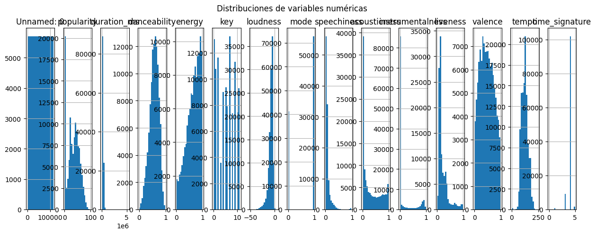
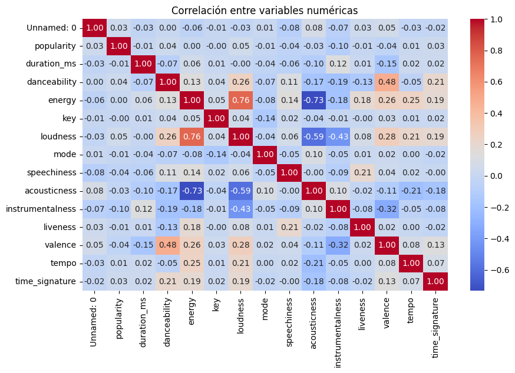
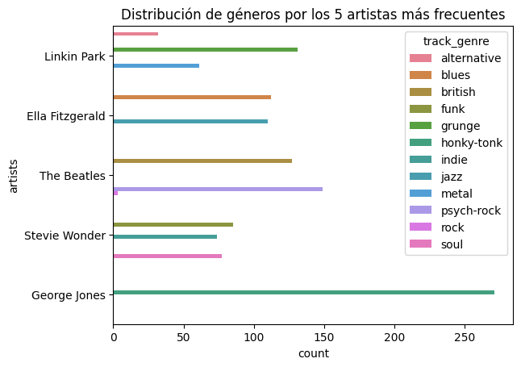
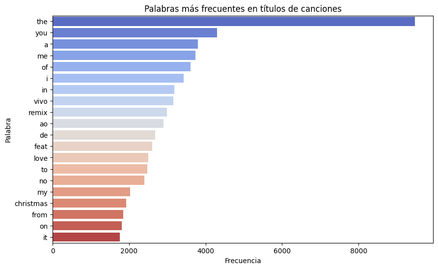

import pandas as pd
import numpy as np
import matplotlib.pyplot as plt
import seaborn as snsCargar los datos
file_path = 'data/spotify.csv'
df = pd.read_csv(file_path)
print(f"Info del DataFrame")
df.info()Info del DataFrame
<class 'pandas.core.frame.DataFrame'>
RangeIndex: 114000 entries, 0 to 113999
Data columns (total 21 columns):
# Column Non-Null Count Dtype
--- ------ -------------- -----
0 Unnamed: 0 114000 non-null int64
1 track_id 114000 non-null object
2 artists 113999 non-null object
3 album_name 113999 non-null object
4 track_name 113999 non-null object
5 popularity 114000 non-null int64
6 duration_ms 114000 non-null int64
7 explicit 114000 non-null bool
8 danceability 114000 non-null float64
9 energy 114000 non-null float64
10 key 114000 non-null int64
11 loudness 114000 non-null float64
12 mode 114000 non-null int64
13 speechiness 114000 non-null float64
14 acousticness 114000 non-null float64
15 instrumentalness 114000 non-null float64
16 liveness 114000 non-null float64
17 valence 114000 non-null float64
18 tempo 114000 non-null float64
19 time_signature 114000 non-null int64
20 track_genre 114000 non-null object
dtypes: bool(1), float64(9), int64(6), object(5)
memory usage: 17.5+ MBConocer valores nulos por columna
# Valores nulos por columna
print("Valores nulos por columna:")
valores_nulos = df.isnull().sum()
print(valores_nulos)Valores nulos por columna:
Unnamed: 0 0
track_id 0
artists 1
album_name 1
track_name 1
popularity 0
duration_ms 0
explicit 0
danceability 0
energy 0
key 0
loudness 0
mode 0
speechiness 0
acousticness 0
instrumentalness 0
liveness 0
valence 0
tempo 0
time_signature 0
track_genre 0
dtype: int64Limpieza básica del DataFrame
df = df.dropna()
df = df.drop_duplicates()
print(valores_nulos)Unnamed: 0 0
track_id 0
artists 1
album_name 1
track_name 1
popularity 0
duration_ms 0
explicit 0
danceability 0
energy 0
key 0
loudness 0
mode 0
speechiness 0
acousticness 0
instrumentalness 0
liveness 0
valence 0
tempo 0
time_signature 0
track_genre 0
dtype: int64Análisis exploratorio
df.describe()| Unnamed: 0 | popularity | duration_ms | danceability | energy | key | loudness | mode | speechiness | acousticness | instrumentalness | liveness | valence | tempo | time_signature | |
|---|---|---|---|---|---|---|---|---|---|---|---|---|---|---|---|
| count | 113999.000000 | 113999.000000 | 1.139990e+05 | 113999.000000 | 113999.000000 | 113999.000000 | 113999.000000 | 113999.000000 | 113999.000000 | 113999.000000 | 113999.000000 | 113999.000000 | 113999.000000 | 113999.000000 | 113999.000000 |
| mean | 56999.421925 | 33.238827 | 2.280312e+05 | 0.566801 | 0.641383 | 5.309126 | -8.258950 | 0.637558 | 0.084652 | 0.314907 | 0.156051 | 0.213554 | 0.474066 | 122.147695 | 3.904034 |
| std | 32909.243463 | 22.304959 | 1.072961e+05 | 0.173543 | 0.251530 | 3.559999 | 5.029357 | 0.480708 | 0.105733 | 0.332522 | 0.309556 | 0.190378 | 0.259261 | 29.978290 | 0.432623 |
| min | 0.000000 | 0.000000 | 8.586000e+03 | 0.000000 | 0.000000 | 0.000000 | -49.531000 | 0.000000 | 0.000000 | 0.000000 | 0.000000 | 0.000000 | 0.000000 | 0.000000 | 0.000000 |
| 25% | 28499.500000 | 17.000000 | 1.740660e+05 | 0.456000 | 0.472000 | 2.000000 | -10.013000 | 0.000000 | 0.035900 | 0.016900 | 0.000000 | 0.098000 | 0.260000 | 99.218500 | 4.000000 |
| 50% | 56999.000000 | 35.000000 | 2.129060e+05 | 0.580000 | 0.685000 | 5.000000 | -7.004000 | 1.000000 | 0.048900 | 0.169000 | 0.000042 | 0.132000 | 0.464000 | 122.017000 | 4.000000 |
| 75% | 85499.500000 | 50.000000 | 2.615060e+05 | 0.695000 | 0.854000 | 8.000000 | -5.003000 | 1.000000 | 0.084500 | 0.597500 | 0.049000 | 0.273000 | 0.683000 | 140.071000 | 4.000000 |
| max | 113999.000000 | 100.000000 | 5.237295e+06 | 0.985000 | 1.000000 | 11.000000 | 4.532000 | 1.000000 | 0.965000 | 0.996000 | 1.000000 | 1.000000 | 0.995000 | 243.372000 | 5.000000 |
df.describe(include=['object', 'category'])| track_id | artists | album_name | track_name | track_genre | |
|---|---|---|---|---|---|
| count | 113999 | 113999 | 113999 | 113999 | 113999 |
| unique | 89740 | 31437 | 46589 | 73608 | 114 |
| top | 6S3JlDAGk3uu3NtZbPnuhS | The Beatles | Alternative Christmas 2022 | Run Rudolph Run | acoustic |
| freq | 9 | 279 | 195 | 151 | 1000 |
col_cat = df.select_dtypes(include=['object', 'category']).columns.tolist()
categorical = df[col_cat]
col_num = df.select_dtypes(include=['int64', 'float64']).columns.tolist()
numerical = df[col_num]def summary_numeric(df):
"""
Calcula la media, mediana y moda de las columnas numéricas de un DataFrame.
Parámetros:
df (pd.DataFrame): DataFrame a analizar.
Retorna:
pd.DataFrame: DataFrame con columnas: 'media', 'mediana', 'moda'
"""
# Seleccionar solo columnas numéricas
summary = pd.DataFrame(index=df.columns, columns=['media', 'mediana', 'moda'])
for col in df.columns:
summary.loc[col, 'media'] = df[col].mean()
summary.loc[col, 'mediana'] = df[col].median()
summary.loc[col, 'moda'] = df[col].mode().iloc[0] if not df[col].mode().empty else None # Moda: si hay varias, se toma la primera
summary.loc[col, 'desviacion_std'] = df[col].std()
summary.loc[col, 'min'] = df[col].min()
summary.loc[col, 'Q1'] = df[col].quantile(0.25)
summary.loc[col, 'Q3'] = df[col].quantile(0.75)
summary.loc[col, 'max'] = df[col].max()
return summary
summary_numeric(numerical)| media | mediana | moda | desviacion_std | min | Q1 | Q3 | max | |
|---|---|---|---|---|---|---|---|---|
| Unnamed: 0 | 56999.421925 | 56999.0 | 0 | 32909.243463 | 0.000 | 28499.5000 | 85499.5000 | 113999.000 |
| popularity | 33.238827 | 35.0 | 0 | 22.304959 | 0.000 | 17.0000 | 50.0000 | 100.000 |
| duration_ms | 228031.153387 | 212906.0 | 162897 | 107296.057716 | 8586.000 | 174066.0000 | 261506.0000 | 5237295.000 |
| danceability | 0.566801 | 0.58 | 0.647 | 0.173543 | 0.000 | 0.4560 | 0.6950 | 0.985 |
| energy | 0.641383 | 0.685 | 0.876 | 0.251530 | 0.000 | 0.4720 | 0.8540 | 1.000 |
| key | 5.309126 | 5.0 | 7 | 3.559999 | 0.000 | 2.0000 | 8.0000 | 11.000 |
| loudness | -8.25895 | -7.004 | -5.662 | 5.029357 | -49.531 | -10.0130 | -5.0030 | 4.532 |
| mode | 0.637558 | 1.0 | 1 | 0.480708 | 0.000 | 0.0000 | 1.0000 | 1.000 |
| speechiness | 0.084652 | 0.0489 | 0.0323 | 0.105733 | 0.000 | 0.0359 | 0.0845 | 0.965 |
| acousticness | 0.314907 | 0.169 | 0.995 | 0.332522 | 0.000 | 0.0169 | 0.5975 | 0.996 |
| instrumentalness | 0.156051 | 0.000042 | 0.0 | 0.309556 | 0.000 | 0.0000 | 0.0490 | 1.000 |
| liveness | 0.213554 | 0.132 | 0.108 | 0.190378 | 0.000 | 0.0980 | 0.2730 | 1.000 |
| valence | 0.474066 | 0.464 | 0.961 | 0.259261 | 0.000 | 0.2600 | 0.6830 | 0.995 |
| tempo | 122.147695 | 122.017 | 0.0 | 29.978290 | 0.000 | 99.2185 | 140.0710 | 243.372 |
| time_signature | 3.904034 | 4.0 | 4 | 0.432623 | 0.000 | 4.0000 | 4.0000 | 5.000 |
num_cols = df.select_dtypes(include=['float64','int64']).columns
if len(num_cols) > 0:
# Histograma
df[num_cols].hist(bins=20, figsize=(15,5), layout=(1,len(num_cols)))
plt.suptitle("Distribuciones de variables numéricas")
plt.show()
# Matriz de correlación
plt.figure(figsize=(10,6))
sns.heatmap(df[num_cols].corr(), annot=True, cmap='coolwarm', fmt=".2f")
plt.title("Correlación entre variables numéricas")
plt.show()

Hacer análisis exploratorio de datos separando variables categóricas y numéricas
categorical.head()| track_id | artists | album_name | track_name | track_genre | |
|---|---|---|---|---|---|
| 0 | 5SuOikwiRyPMVoIQDJUgSV | Gen Hoshino | Comedy | Comedy | acoustic |
| 1 | 4qPNDBW1i3p13qLCt0Ki3A | Ben Woodward | Ghost (Acoustic) | Ghost - Acoustic | acoustic |
| 2 | 1iJBSr7s7jYXzM8EGcbK5b | Ingrid Michaelson;ZAYN | To Begin Again | To Begin Again | acoustic |
| 3 | 6lfxq3CG4xtTiEg7opyCyx | Kina Grannis | Crazy Rich Asians (Original Motion Picture Sou... | Can't Help Falling In Love | acoustic |
| 4 | 5vjLSffimiIP26QG5WcN2K | Chord Overstreet | Hold On | Hold On | acoustic |
numerical.head()| Unnamed: 0 | popularity | duration_ms | danceability | energy | key | loudness | mode | speechiness | acousticness | instrumentalness | liveness | valence | tempo | time_signature | |
|---|---|---|---|---|---|---|---|---|---|---|---|---|---|---|---|
| 0 | 0 | 73 | 230666 | 0.676 | 0.4610 | 1 | -6.746 | 0 | 0.1430 | 0.0322 | 0.000001 | 0.3580 | 0.715 | 87.917 | 4 |
| 1 | 1 | 55 | 149610 | 0.420 | 0.1660 | 1 | -17.235 | 1 | 0.0763 | 0.9240 | 0.000006 | 0.1010 | 0.267 | 77.489 | 4 |
| 2 | 2 | 57 | 210826 | 0.438 | 0.3590 | 0 | -9.734 | 1 | 0.0557 | 0.2100 | 0.000000 | 0.1170 | 0.120 | 76.332 | 4 |
| 3 | 3 | 71 | 201933 | 0.266 | 0.0596 | 0 | -18.515 | 1 | 0.0363 | 0.9050 | 0.000071 | 0.1320 | 0.143 | 181.740 | 3 |
| 4 | 4 | 82 | 198853 | 0.618 | 0.4430 | 2 | -9.681 | 1 | 0.0526 | 0.4690 | 0.000000 | 0.0829 | 0.167 | 119.949 | 4 |
Análsis bivariado de variables categóricas con Cramer’s V (fuerza de asociación entre categóricas).
from scipy.stats import chi2_contingency
def cramers_v(x, y):
confusion_matrix = pd.crosstab(x, y)
chi2 = chi2_contingency(confusion_matrix)[0]
n = confusion_matrix.sum().sum()
phi2 = chi2 / n
r, k = confusion_matrix.shape
phi2corr = max(0, phi2 - ((k-1)*(r-1))/(n-1)) # corrected phi2
rcorr = r - ((r-1)**2)/(n-1) # corrected rows
kcorr = k - ((k-1)**2)/(n-1) # corrected columns
return np.sqrt(phi2corr / min((kcorr-1), (rcorr-1)))
# Ejemplo de uso de Cramer's V
cramers_v(categorical['track_genre'], categorical['artists'])np.float64(0.6915944899301127)Relaciones entre variables categóricas
Títulos de canciones por género específico: Para este ejercicio el género a analizar fue ‘indie’.
def titles_by_genre(df, genre):
"""Regresa los títulos que contienen el género especificado."""
return df[df['track_genre'].str.contains(genre, na=False)][['track_name', 'artists', 'album_name']]
titles_by_genre(df, 'indie')| track_name | artists | album_name | |
|---|---|---|---|
| 56000 | Zakir | NAALAYAK | Zakir |
| 56001 | golden hour | JVKE | this is what ____ feels like (Vol. 1-4) |
| 56002 | Aisay Kaisay | Hasan Raheem;Abdullah Kasumbi | Aisay Kaisay |
| 56003 | Apocalypse | Cigarettes After Sex | Cigarettes After Sex |
| 56004 | Heat Waves | Glass Animals | Heat Waves |
| ... | ... | ... | ... |
| 57995 | Record Player (with AJR) | Daisy the Great;AJR | Record Player (with AJR) |
| 57996 | Rät | Penelope Scott | Public Void |
| 57997 | Could I Love You Any More (feat. Jason Mraz) | Reneé Dominique;Jason Mraz | Could I Love You Any More (feat. Jason Mraz) |
| 57998 | Roma (Lrdp Maqueta) | Sabino | Genaro Presenta: Este No Es el Disco |
| 57999 | Loose Ends | Loyle Carner;Jorja Smith | Coffee Break |
2000 rows × 3 columns
Distribución de géneros por los 5 artistas más frecuentes
sns.countplot(y='artists', hue='track_genre', data=df[df['artists'].isin(df['artists'].value_counts().head(5).index)])
plt.title("Distribución de géneros por los 5 artistas más frecuentes")
plt.show()
Índice de diversidad de géneros por artista
from scipy.stats import entropy
diversity = df.groupby('artists')['track_genre'].value_counts(normalize=True).unstack().fillna(0).apply(entropy, axis=1)
diversity.sort_values(ascending=False).head(10)artists
Derek & The Dominos 2.017859
Fear, and Loathing in Las Vegas 1.933810
Allman Brothers Band 1.925408
Steve Miller Band 1.881344
Ritviz;Nucleya 1.856270
Peter Frampton 1.846220
Wisin & Yandel;Franco "El Gorilla";Jayko 1.791759
Wisin & Yandel;Tego Calderón;Franco "El Gorilla" 1.791759
Porter Robinson;League of Legends 1.791759
Ankur Tewari;Prateek Kuhad;Dhruv Bhola;Nikhil Vasudevan 1.791759
dtype: float64Análisis de palabras comunes en títulos
from collections import Counter
from wordcloud import WordCloud
import re
titles = df['track_name'].dropna().str.lower()
titles = titles.apply(lambda x: re.sub(r'[^a-z\s]', '', x))
# Dividir todos los títulos en palabras individuales
words = [word for title in titles for word in title.split()]
# Palabras más comunes
common_words = Counter(words).most_common(20)
common_words[:10]
top_words = pd.DataFrame(common_words, columns=['word', 'count'])
plt.figure(figsize=(10,6))
sns.barplot(x='count', y='word', data=top_words, palette='coolwarm')
plt.title("Palabras más frecuentes en títulos de canciones")
plt.xlabel("Frecuencia")
plt.ylabel("Palabra")
plt.show()/var/folders/9w/1hmhsxn974l_vhcstn1k4czm0000gn/T/ipykernel_79299/2287517595.py:18: FutureWarning:
Passing `palette` without assigning `hue` is deprecated and will be removed in v0.14.0. Assign the `y` variable to `hue` and set `legend=False` for the same effect.
sns.barplot(x='count', y='word', data=top_words, palette='coolwarm')
def keywords_in_titles(df, keywords):
"""Regresa los títulos que contienen alguna de las palabras clave especificadas."""
pattern = '|'.join(keywords)
return df[df['track_name'].str.contains(pattern, case=False, na=False)][['track_name', 'artists', 'album_name']]
keywords_in_titles(df, ['tomorrow'])| track_name | artists | album_name | |
|---|---|---|---|
| 38 | This Time Tomorrow | Brandi Carlile | Coffee Moment |
| 798 | This Time Tomorrow | Brandi Carlile | In These Silent Days |
| 1257 | Tomorrow | Jor'dan Armstrong | Tomorrow |
| 5247 | Blockbuster feat. YEONJUN of TOMORROW X TOGETHER | ENHYPEN;YEONJUN | DIMENSION : DILEMMA |
| 5448 | Blockbuster feat. YEONJUN of TOMORROW X TOGETHER | ENHYPEN;YEONJUN | DIMENSION : ANSWER |
| ... | ... | ... | ... |
| 105118 | Maybe Tomorrow | downstreamdream | Maybe Tomorrow |
| 106737 | No Tomorrow (Bonus Track) | Rasmus Hagen;iamsimon | Love & Hurt (Deluxe Edition) |
| 109323 | Outomorrow - Anyma, Kevin de Vries Remix | KAS:ST;Anyma;Kevin de Vries | A Magic World (Remixes) |
| 110417 | Tomorrow | Capital Monkey;Klopfgeister | Tomorrow - Single |
| 112802 | See You Tomorrow | Evgeny Grinko | Orange Marmalade |
73 rows × 3 columns
Análisis De Resultados
Estructura General del Dataset
El dataset contiene 114,000 registros y 21 columnas, de las cuales: - 9 son variables numéricas continuas (como danceability, energy, tempo). - 6 son variables numéricas discretas (como key, mode, time_signature). - 5 son variables categóricas (track_id, artists, album_name, track_name, track_genre). - Solo 3 valores nulos fueron detectados (en artists, album_name, track_name), los cuales se eliminaron sin afectar la integridad del conjunto de datos.
Esto indica que el dataset está bien estructurado y limpio, lo que facilita el análisis posterior.
Descripción Estadística General
| Variable | Interpretación destacada |
|---|---|
| popularity | Promedio de 33.2, con un máximo de 100. Esto sugiere que la mayoría de las canciones no son extremadamente populares, aunque hay casos destacados. |
| duration_ms | La duración promedio de las canciones es de 228 segundos (~3.8 minutos), consistente con estándares comerciales. Existen outliers de hasta 87 minutos, posiblemente grabaciones o pistas erróneas. |
| danceability | Media de 0.56, lo que indica una tendencia moderadamente bailable. |
| energy | Media de 0.64, con valores dispersos: coexistencia de temas suaves y otros muy intensos. |
| loudness | Promedio de -8.25 dB, típico en grabaciones modernas con compresión dinámica. |
| acousticness / instrumentalness | La mayoría de las canciones son poco acústicas e instrumentales, reflejando una preferencia por producciones electrónicas o vocales. |
| valence | Promedio de 0.47, indicando un tono emocional neutral (ni muy alegre ni muy melancólico). |
| tempo | Promedio de 122 BPM, típico de géneros pop y electrónicos. |
Distribución y Correlaciones
El análisis visual mediante histogramas y matriz de correlación muestra:
- Las distribuciones de variables como popularity, danceability y valence son asimétricas, concentradas en valores bajos o medios.
Correlaciones positivas: - energy ↔︎ loudness → canciones más fuertes suelen ser más enérgicas. - danceability ↔︎ valence → canciones más bailables tienden a sonar más alegres.
Correlaciones negativas: - acousticness ↔︎ energy → mientras más acústica es la canción, menos energética. - acousticness ↔︎ loudness → canciones acústicas tienden a menor volumen promedio.
Estas relaciones confirman patrones musicales esperables y útiles para modelado predictivo o segmentación de géneros.
Variables Categóricas
Diversidad de artistas y géneros
31,437 artistas únicos, 46,589 álbumes y 73,608 canciones diferentes.
Los géneros (track_genre) suman 114 categorías, con “acoustic” como el más frecuente (~1,000 canciones).
Asociación entre categóricas (Cramer’s V) - El valor obtenido Cramer’s V = 0.69 entre track_genre y artists indica una fuerte asociación, lo que significa que ciertos artistas se concentran en géneros específicos (por ejemplo, artistas de pop o rock mantienen consistencia de estilo).
Diversidad de Géneros por Artista
El índice de entropía (diversidad) muestra que algunos artistas combinan múltiples géneros en su producción.
Ejemplos destacados: - Derek & The Dominos - Fear and Loathing in Las Vegas - Allman Brothers Band
Estos artistas presentan los valores más altos de diversidad, indicando una mayor exploración estilística. En contraste, la mayoría de los artistas se mantienen dentro de un único género dominante.
Análisis Textual: Títulos de Canciones
Las palabras más frecuentes en los títulos incluyen términos genéricos como:
- “love”, “night”, “time”, “remix”, “baby”
Esto refleja temas emocionales y universales en la música popular.
El análisis de títulos con palabras clave (por ejemplo, “tomorrow”) permite identificar tendencias temáticas o temporales.
Este tipo de análisis lingüístico podría extenderse usando WordClouds, TF-IDF o embeddings, para explorar sentimientos o asociaciones con la popularidad.
Visualización de Géneros y Artistas
El conteo de géneros entre los 5 artistas más frecuentes revela que cada artista tiende a especializarse en un conjunto limitado de géneros, aunque existen excepciones donde se fusionan estilos (pop-electrónica, indie-folk, etc.).